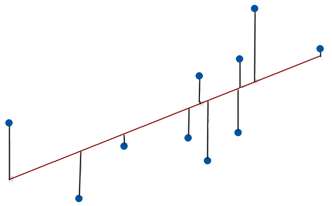
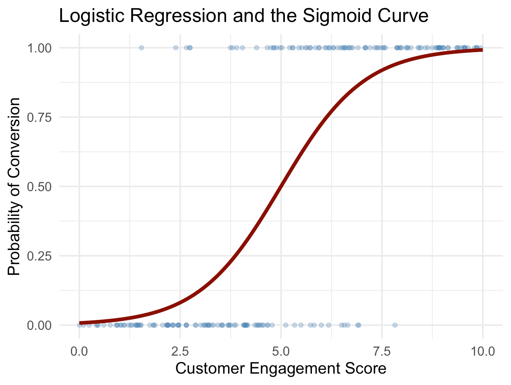

ADS370 · R for Data Science · Week 12
Department of Applied Data Science · Hong Kong Shue Yan University
2026-01-01
> HKSYU_ADS370.exe --module MODEL_BUILDING_I --week 12
MODEL BUILDING [I]
Defining Models · Model Families · Practical Examples
ADS370 — R for Data Science | Week 12 | Spring 2026
Instructor : Dr. Ruiwu Niu
Institution: Hong Kong Shue Yan University
References : Wickham & Grolemund (2017) Ch. 18–19 | Mailund (2017) Ch. 6–7> LOAD MODULE: WEEK_11_REVIEW ▓▓▓▓▓▓▓▓▓▓▓▓▓▓░░░ 82%
Week 11 — Exploratory Data Analysis
Variation — Every variable has a distribution. Visualise with geom_histogram() / geom_freqpoly() to detect outliers & unusual values.
Covariation — How do two variables move together? - Categorical × continuous → geom_boxplot() - Two continuous → geom_point(), geom_bin2d(), geom_hex()
Missing values — Never ignore. Use is.na(), na.rm = TRUE, or replace with ifelse(). Understand why they are missing.
Wickham, H., & Grolemund, G. (2017). R for data science. O’Reilly Media. Ch. 5–6. | Mailund, T. (2017). Beginning data science in R. Apress. Ch. 2, 5.
> LOAD MODULE: WEEK_11_REVIEW ▓▓▓▓▓▓▓▓▓▓▓▓▓▓▓▓ 100% OK
Patterns, Models & EDA Cycle
┌─────────────────────────────────────────────────────┐ │ 1 Generate Questions │ │ ↓ │ │ 2 Visualise / Transform (ggplot2, dplyr) │ │ ↓ │ │ 3 Refine Questions ← residuals reveal new signal │ │ ↑_______________________________________↑ │ │ ITERATIVE LOOP │ └─────────────────────────────────────────────────────┘
“All models are wrong, but some are useful.” — George E. P. Box
Key insight from last week: models can remove a pattern from data, leaving residuals that expose the next hidden structure.
Wickham, H., & Grolemund, G. (2017). R for data science. O’Reilly Media. Ch. 5–6. | Box, G. E. P. (1976). Science and statistics. Journal of the American Statistical Association, 71(356), 791–799. https://doi.org/10.1080/01621459.1976.10480949
> HKSYU_ADS370.exe --module MODEL_BUILDING_I --week 12
┌────────────────────────────────────────────────────────────────────┐ │ LOADING MODULES FOR ADS370 WEEK 12 ... │ ├─────────────────────────────────────────────┬──────────────────────┤ │ MODULE │ DURATION │ ├─────────────────────────────────────────────┼──────────────────────┤ │ [§1] DEFINING MODELS │ ~30 min │ │ What is a model? RMSD lm() │ │ ├─────────────────────────────────────────────┼──────────────────────┤ │ [§2] MODEL FAMILIES ◄── CORE TODAY │ ~35 min │ │ Model matrix Categorical Interaction│ │ │ Transformations Splines │ │ ├─────────────────────────────────────────────┼──────────────────────┤ │ [§3] PRACTICAL EXAMPLES │ ~25 min │ │ Diamonds paradox NYC Flights │ │ ├─────────────────────────────────────────────┼──────────────────────┤ │ [§4] AT2 IN-CLASS EXERCISE │ 60 min │ │ Implementing Models │ │ └─────────────────────────────────────────────┴──────────────────────┘
Readings: Wickham & Grolemund (2017) Ch. 18–19 | Mailund (2017) Ch. 6–7
§ SECTION 01 / 05 ────────────────────────────
DEFINING MODELS
What is a model? · RMSD · lm() · Optimization
A model provides a simple, low-dimensional summary of a dataset. It partitions data into:
The key insight:
Models do not reveal truth. They provide useful approximations.
DATA = PATTERN + RESIDUAL
↑ ↑
(model) (signal left over)
“All models are wrong, but some are useful.” — Box (1976)
Wickham, H., & Grolemund, G. (2017). R for data science. O’Reilly Media. Ch. 23, p. 345. | Box, G. E. P. (1976). Science and statistics. Journal of the American Statistical Association, 71(356), 791–799. https://doi.org/10.1080/01621459.1976.10480949
① Family of Models
A family is a generic pattern expressed as an equation with free parameters.
Examples:
| Family | Equation |
|---|---|
| Linear | (y = a_1 + a_2 x) |
| Power law | (y = a_1 x^{a_2}) |
| Polynomial | (y = a_1 + a_2 x + a_3 x^2) |
② Fitted Model
The fitted model is the specific member of the family closest to your data.
Example:
\[y = \underbrace{4.22}_{\hat{a}_1} + \underbrace{2.05}_{\hat{a}_2} \cdot x\]
Parameters (_1, _2) are estimated from data.
Analogy: Family = blueprint template. Fitted model = the specific building constructed from it.
Wickham, H., & Grolemund, G. (2017). R for data science. O’Reilly Media. Ch. 23.1, pp. 345–346.
Start with random candidate models from the family (y = a_1 + a_2 x):
Most are poor fits — but this shows the space we are searching.
Wickham, H., & Grolemund, G. (2017). R for data science. O’Reilly Media. Ch. 23.2, pp. 347–348.
How do we decide which model is “best”?
RMSD — Root-Mean-Squared Deviation
\(\text{RMSD} = \sqrt{\frac{1}{n}\sum_{i=1}^{n}(y_i - \hat{y}_i)^2}\)
Wickham, H., & Grolemund, G. (2017). R for data science. O’Reilly Media. Ch. 23.2, p. 349.
What grid search reveals:
a1 ≈ 4.2, a2 ≈ 2.0Wickham, H., & Grolemund, G. (2017). R for data science. O’Reilly Media. Ch. 23.2, pp. 350–351.
optim()optim() uses Newton-Raphson / gradient descent internally. It iteratively steps in the direction of decreasing RMSD until it converges.
Limitations:
lm() → exact global minimum via linear algebraOPTIMISER LOG:
iteration 1 → dist: 3.12
iteration 8 → dist: 2.18
iteration 24 → dist: 2.07
iteration 51 → CONVERGED
a1 = 4.222 a2 = 2.051Wickham, H., & Grolemund, G. (2017). R for data science. O’Reilly Media. Ch. 23.2, pp. 351–352.
lm() Function: Linear Models in Rlm(formula, data) — fits a linear model using ordinary least squares (OLS) via linear algebra. Faster and exact.
Anatomy of output:
| Term | Value | Meaning |
|---|---|---|
(Intercept) |
4.22 | (_1) — value when x=0 |
x |
2.05 | (_2) — slope |
Generate predictions:
Wickham, H., & Grolemund, G. (2017). R for data science. O’Reilly Media. Ch. 23.2, pp. 352–353. | R Core Team. (2024). R: A language and environment for statistical computing (Version 4.4). R Foundation for Statistical Computing. https://www.R-project.org/
Computing residuals:
What to look for in residuals:
Wickham, H., & Grolemund, G. (2017). R for data science. O’Reilly Media. Ch. 23.3, pp. 354–355.
▶ QUICK CHECK — §1 DEFINING MODELS
Write the lm() call that fits mpg as a function of wt from the mtcars dataset.
Interpretation: For every 1,000 lb increase in weight, fuel efficiency decreases by approximately 5.3 mpg.
Dataset: Henderson, H. V., & Velleman, P. F. (1981). Building multiple regression models interactively. Biometrics, 37(2), 391–411. https://doi.org/10.2307/2530428
§ SECTION 02 / 05 ────────────────────────────
MODEL FAMILIES
Model Matrix · Categorical · Interactions · Transformations · Splines
A model family is a class of equations sharing the same structural form, differentiated only by their parameters.
Common families in data science:
| Family | Formula | R function |
|---|---|---|
| Linear | (y = a_0 + a_1 x) | lm() |
| Polynomial | (y = a_0 + a_1 x + a_2 x^2) | lm() + I() |
| Natural spline | flexible nonlinear | lm() + ns() |
| Logistic | ( = X) | glm(..., binomial) |
| Robust linear | downweights outliers | MASS::rlm() |
Choosing a family is a design decision:
Wickham, H., & Grolemund, G. (2017). R for data science. O’Reilly Media. Ch. 23.4, pp. 355–356. | Mailund, T. (2017). Beginning data science in R. Apress. Ch. 6, pp. 125–136.
model_matrix(data, formula) translates a formula into a design matrix (X). Each column in (X) becomes a coefficient in the model.
Wickham, H., & Grolemund, G. (2017). R for data science. O’Reilly Media. Ch. 23.4.1, p. 356. | Mailund, T. (2017). Beginning data science in R. Apress. Ch. 6, p. 136.
From formula to matrix — the linear model:
\[y = a_1 \cdot \underbrace{1}_{\text{intercept col}} + a_2 \cdot \underbrace{x_1}_{\text{predictor col}}\]
| (Intercept) | x1 | x2 |
|---|---|---|
| 1 | 2 | 5 |
| 1 | 1 | 6 |
Each row = one observation. Each column = one model term.
Rule: The number of columns = the number of estimated parameters.
Key formula notation:
| R syntax | Meaning |
|---|---|
y ~ x |
(y = a_0 + a_1 x) |
y ~ x - 1 |
(y = a_1 x) (no intercept) |
y ~ x1 + x2 |
two predictors |
y ~ x1 * x2 |
interaction |
y ~ I(x^2) |
quadratic term |
Wickham, H., & Grolemund, G. (2017). R for data science. O’Reilly Media. Ch. 23.4.1, pp. 356–357.
R automatically converts a categorical variable into dummy (indicator) variables. One level is dropped to avoid perfect multicollinearity (reference category).
Model equation: \[\text{response} = a_0 + a_1 \cdot \text{sexmale}\]
sex = "female": sexmale = 0 → response = (a_0)sex = "male": sexmale = 1 → response = (a_0 + a_1)Why drop one level?
If we had both sexfemale and sexmale, then sexfemale = 1 - sexmale always → perfect collinearity → matrix is singular → lm() fails.
Wickham, H., & Grolemund, G. (2017). R for data science. O’Reilly Media. Ch. 23.4.2, pp. 358–359.
sim2 ExampleKey insight: For a categorical-only model, lm() predicts the group mean for each level.
⚠ Warning: New factor levels not seen during training → prediction error.
"Error: factor x has new level e"
Wickham, H., & Grolemund, G. (2017). R for data science. O’Reilly Media. Ch. 23.4.2, pp. 359–360.
+ operator — estimates effects independently (parallel slopes).
* operator — estimates effects with interaction (different slopes per group).
Comparing predictions:
Wickham, H., & Grolemund, G. (2017). R for data science. O’Reilly Media. Ch. 23.4.3, pp. 360–363.
# sim4: both x1 and x2 are continuous
mod1 <- lm(y ~ x1 + x2, data = sim4) # additive
mod2 <- lm(y ~ x1 * x2, data = sim4) # interaction surface
# Fine-grained prediction grid
grid <- sim4 |>
data_grid(
x1 = seq_range(x1, 5), # 5 evenly spaced x1 values
x2 = seq_range(x2, 5) # 5 evenly spaced x2 values
) |>
gather_predictions(mod1, mod2)With two continuous predictors and interaction, the model surface is a tilted plane (additive) or a warped surface (interaction). You must visualise both variables simultaneously.
seq_range() tips: pretty=TRUE → human-readable steps · trim=0.1 → exclude tails · expand=0.1 → extend range
Wickham, H., & Grolemund, G. (2017). R for data science. O’Reilly Media. Ch. 23.4.4, pp. 363–366.
R formulas support transformations directly — but be careful with operator precedence.
df_t <- tribble(~y, ~x, 1,1, 2,2, 3,3)
# ⚠ WRONG — x^2 is parsed as x*x = x
model_matrix(df_t, y ~ x^2 + x)
# (Intercept) x ← only ONE x column!
# ✅ CORRECT — use I() to protect
model_matrix(df_t, y ~ I(x^2) + x)
# (Intercept) I(x^2) x
# Log transform
model_matrix(df_t, y ~ log(x))
# Square root
model_matrix(df_t, y ~ sqrt(x))Why I() is needed:
In formula notation: - + means “add predictor” - * means “interaction” - ^ means “crossing to degree n”
I() wraps an expression so R treats it as arithmetic, not formula syntax.
| Syntax | Result |
|---|---|
y ~ x^2 |
just x |
y ~ I(x^2) |
(x^2) term ✓ |
Wickham, H., & Grolemund, G. (2017). R for data science. O’Reilly Media. Ch. 23.4.5, pp. 366–367.
Natural splines (ns(x, df)) fit piecewise polynomials joined smoothly at knots. They are safer than polynomials for extrapolation.
library(splines)
# sim5: y = 4*sin(x) + noise
# Fit models with 1 to 5 degrees of freedom
mod1 <- lm(y ~ ns(x, 1), data = sim5)
mod2 <- lm(y ~ ns(x, 2), data = sim5)
mod3 <- lm(y ~ ns(x, 3), data = sim5)
mod4 <- lm(y ~ ns(x, 4), data = sim5)
mod5 <- lm(y ~ ns(x, 5), data = sim5)
grid <- sim5 |>
data_grid(x = seq_range(x, n = 50)) |>
gather_predictions(mod1, mod2,
mod3, mod4, mod5)Warning: Higher df fits training data well but may extrapolate poorly outside ([0, 3.5]).
Wickham, H., & Grolemund, G. (2017). R for data science. O’Reilly Media. Ch. 23.4.5, pp. 367–368.
Mailund’s perspective: formulas in R are first-class objects with associated environments. lm(y ~ x, data = df) looks up variables in df first, then the formula’s environment.
Three model specification components (Mailund):
| Component | What it does |
|---|---|
model.frame() |
Extracts response + predictor data |
model.matrix() |
Builds design matrix (X) |
model.response() |
Extracts target vector (y) |
Mailund, T. (2017). Beginning data science in R: Data analysis, visualization, and modelling for the data scientist. Apress. Ch. 6, pp. 128–138.
summary(lm())Call: lm(formula = y ~ x, data = sim1)
Residuals:
Min 1Q Median 3Q Max
-3.046 -0.913 0.068 0.837 3.219
Coefficients:
Estimate Std. Error t value Pr(>|t|)
(Intercept) 4.2208 0.2735 15.44 <2e-16 ***
x 2.0515 0.0483 42.49 <2e-16 ***
Residual standard error: 1.308 on 28 degrees of freedom
Multiple R-squared: 0.9846, Adjusted R-squared: 0.9840
F-statistic: 1805 on 1 and 28 DF, p-value: < 2.2e-16Mailund, T. (2017). Beginning data science in R. Apress. Ch. 6, pp. 128–133. | Wickham, H., & Grolemund, G. (2017). R for data science. O’Reilly Media. Ch. 23.2, p. 353.
When the outcome (y {0, 1}), use logistic regression:
\[\log\frac{p}{1-p} = \beta_0 + \beta_1 x_1 + \cdots + \beta_k x_k\]
where (p = P(Y=1 | X)). Use glm() with family = binomial.

Mailund, T. (2017). Beginning data science in R. Apress. Ch. 6, pp. 133–136.
Mailund shows how to build your own lm()-like function using model matrices directly — demystifying R’s internals.
# OLS solution: β = (X'X)^{-1} X'y
linmo <- function(form, data = NULL) {
mf <- model.frame(form, data)
y <- model.response(mf, "numeric")
X <- model.matrix(form, data)
# Solve normal equations
weights <- solve(t(X) %*% X, t(X) %*% y)
structure(
list(weights = weights, formula = form, data = data),
class = "linear_model"
)
}
# Test it
m <- linmo(y ~ x, data = sim1)
m$weights
# [,1]
# (Intercept) 4.221
# x 2.052Mailund, T. (2017). Beginning data science in R. Apress. Ch. 6, pp. 136–140.
▶ QUICK CHECK — §2 MODEL FAMILIES
Using sim3 from modelr:
Discuss with your neighbour: Does the interaction model improve the fit? How can you tell from the residuals?
§ SECTION 03 / 05 ────────────────────────────
PRACTICAL EXAMPLES
Diamonds Paradox · NYC Flights · Iterative Model Building
Model building is iterative, not a one-shot process.
┌─────────────────────────────────────────────────────────┐ │ │ │ 1 VISUALISE data → spot a pattern │ │ ↓ │ │ 2 FIT a model → make the pattern concrete │ │ ↓ │ │ 3 COMPUTE residuals → what's left over? │ │ ↓ │ │ 4 VISUALISE residuals → find the next pattern │ │ ↑_________________________________________↑ │ │ REPEAT │ └─────────────────────────────────────────────────────────┘
Prerequisites for this section:
Wickham, H., & Grolemund, G. (2017). R for data science. O’Reilly Media. Ch. 24.1, p. 415.
Paradox: Lower-quality diamonds (worse cut, colour, clarity) tend to have higher prices. Why?
Worst colour: J (slightly yellow)
Worst clarity: I1 (inclusions visible)
Yet both show higher median prices…
Wickham, H., & Grolemund, G. (2017). R for data science. O’Reilly Media. Ch. 24.2, pp. 416–417.
The hidden variable is carat (diamond weight). Low-quality diamonds tend to be larger, and larger diamonds command higher prices regardless of quality.
Wickham, H., & Grolemund, G. (2017). R for data science. O’Reilly Media. Ch. 24.2.1, pp. 417–419.
Key technique: fit the model on the transformed scale, then back-transform predictions to the original scale for interpretation.
Wickham, H., & Grolemund, G. (2017). R for data science. O’Reilly Media. Ch. 24.2.1, pp. 419–420.
Interpretation of log₂ residuals:
| Residual | Meaning |
|---|---|
| −1 | Half the predicted price |
| 0 | Exactly as predicted |
| +1 | Twice the predicted price |
After removing carat’s effect: better cut/colour/clarity → higher residual. Paradox resolved.
Wickham, H., & Grolemund, G. (2017). R for data science. O’Reilly Media. Ch. 24.2.1, pp. 420–422.
# Multi-predictor model
mod_diamond2 <- lm(
lprice ~ lcarat + color + cut + clarity,
data = diamonds2
)
# Grid using .model to fill in median values
grid <- diamonds2 |>
data_grid(cut, .model = mod_diamond2) |>
add_predictions(mod_diamond2)
ggplot(grid, aes(cut, pred)) +
geom_point(colour = "#39ff14", size = 3)
# Check large residuals (potential pricing errors)
diamonds2 |>
add_residuals(mod_diamond2, "lresid2") |>
filter(abs(lresid2) > 1) |>
select(price, carat, cut, color, clarity) |>
arrange(price)Wickham, H., & Grolemund, G. (2017). R for data science. O’Reilly Media. Ch. 24.2.2, pp. 422–424.
Question: What affects the number of daily flights from New York City airports in 2013?
Data: 365 rows × 2 columns
| date | n |
|---|---|
| 2013-01-01 | 842 |
| 2013-01-02 | 943 |
| … | … |
Wickham, H., & Grolemund, G. (2017). R for data science. O’Reilly Media. Ch. 24.3, pp. 424–425.
Pattern: Fewer flights on weekends — especially Saturdays (business travel dominates). The model captures this day-of-week effect cleanly.
Wickham, H., & Grolemund, G. (2017). R for data science. O’Reilly Media. Ch. 24.3.1, pp. 425–427.
Three remaining patterns in residuals:
① June anomaly — strong regular pattern the model misses
② Saturday seasonality — more flights in summer, fewer in fall
③ Holiday outliers — large negative residuals on: 2013-01-01, 2013-07-04, 2013-09-01, 2013-11-28, 2013-12-25
Wickham, H., & Grolemund, G. (2017). R for data science. O’Reilly Media. Ch. 24.3.1, pp. 427–429.
# Define academic terms as season proxy
term <- function(date) {
cut(date,
breaks = ymd(20130101, 20130605, 20130825, 20140101),
labels = c("spring", "summer", "fall")
)
}
daily <- daily |> mutate(term = term(date))
# Model with interaction: wday × term
mod2 <- lm(n ~ wday * term, data = daily)
# Robust model: downweights holiday outliers
mod3 <- MASS::rlm(n ~ wday * term, data = daily)
# Compare residuals
daily |>
gather_residuals(basic = mod, with_term = mod2) |>
ggplot(aes(date, resid, colour = model)) +
geom_line(alpha = 0.75)Wickham, H., & Grolemund, G. (2017). R for data science. O’Reilly Media. Ch. 24.3.2–24.3.4, pp. 429–434. | Venables, W. N., & Ripley, B. D. (2002). Modern applied statistics with S (4th ed.). Springer. https://doi.org/10.1007/978-0-387-21706-2
━━━━━━━━━━━━━━━━━━━━━━━━━━━━━━━━━━━━━━━━━━━━━━━━━━━━━━━━━━━
WEEK 12 CORE PRINCIPLES — MODEL BUILDING (I)
━━━━━━━━━━━━━━━━━━━━━━━━━━━━━━━━━━━━━━━━━━━━━━━━━━━━━━━━━━━① Start simple
Linear model first. Complexity only when residuals demand it.
② Transformations linearise
log(), sqrt(), I(x^2), ns() — make non-linear patterns tractable.
③ Residuals are your compass
Every pattern in residuals = next modelling opportunity.
④ Confounders hide truth
Always ask: what third variable could explain this relationship?
⑤ Know when to stop
More parameters → overfitting. Use rlm() for robustness.
⑥ Combine visualisation + model
add_predictions() + add_residuals() + ggplot2 = your standard workflow.
Wickham, H., & Grolemund, G. (2017). R for data science. O’Reilly Media. Ch. 24.4, pp. 434–435. | Mailund, T. (2017). Beginning data science in R. Apress. Ch. 6–7.
§ SECTION 04 / 05 ────────────────────────────
AT2 — IN-CLASS EXERCISE
Implementing Models · 60 minutes
▶ AT2 — WEEK 12 IN-CLASS EXERCISE · IMPLEMENTING MODELS
Dataset: Use mpg from ggplot2 (or your own dataset with instructor approval)
Tasks (complete all four):
EDA — Visualise the relationship between hwy (highway mpg) and at least two predictors. Identify a non-linear pattern.
Model fitting — Fit at least two models from different families (e.g., additive vs. interaction, or linear vs. spline). Use lm() or glm().
Predictions — Generate prediction grids using data_grid() and add_predictions(). Plot predictions against observed values.
Residual analysis — Compute residuals with add_residuals(). Visualise and interpret. Does any pattern remain?
Submission: R script (.R) or Quarto document (.qmd) with plots and a brief written interpretation (≤ 200 words).
AT2 assessment: In-class Exercises (20% total; only best 5 contribute). Assessment details in ADS370 course outline (Niu, R., 2026).
▶ AT2 LOGISTICS & RUBRIC
Submission requirements:
.rmd fileggplot2 visualisationsGrading focus:
| Criterion | Weight |
|---|---|
Correct lm()/glm() usage |
30% |
| Prediction visualisation | 25% |
| Residual interpretation | 25% |
| Code clarity & comments | 20% |
AT2 Assessment Overview:
PROGRESS TRACKER:
■ Week 1 ■ Week 2 ■ Week 3
■ Week 4 ■ Week 5 ■ Week 6
■ Week 7 ■ Week 9 ■ Week 10
■ Week 11 ▶ Week 12 □ Week 13
□ Week 14§ SECTION 05 / 05 ────────────────────────────
CLOSING
Next Week Preview · References
> PRELOADING WEEK_13_MODULES ...
Week 13 — Model Building (II)
tibblebroom package — tidy statistical model outputs into data frames
tidy() → coefficients tableglance() → model-level statisticsaugment() → observation-level statisticspurrr::map()Readings:
Wickham, H., & Grolemund, G. (2017). R for data science. O’Reilly Media. Ch. 20. | Mailund, T. (2017). Beginning data science in R. Apress. Ch. 8.
Box, G. E. P. (1976). Science and statistics. Journal of the American Statistical Association, 71(356), 791–799. https://doi.org/10.1080/01621459.1976.10480949
Henderson, H. V., & Velleman, P. F. (1981). Building multiple regression models interactively. Biometrics, 37(2), 391–411. https://doi.org/10.2307/2530428
James, G., Witten, D., Hastie, T., & Tibshirani, R. (2021). An introduction to statistical learning: With applications in R (2nd ed.). Springer. https://doi.org/10.1007/978-1-0716-1418-1
Mailund, T. (2017). Beginning data science in R: Data analysis, visualization, and modelling for the data scientist. Apress. https://doi.org/10.1007/978-1-4842-2671-1
Niu, R. (2026). ADS370 R for data science: Course outline [Unpublished course document]. Department of Applied Data Science, Hong Kong Shue Yan University.
R Core Team. (2024). R: A language and environment for statistical computing (Version 4.4). R Foundation for Statistical Computing. https://www.R-project.org/
Venables, W. N., & Ripley, B. D. (2002). Modern applied statistics with S (4th ed.). Springer. https://doi.org/10.1007/978-0-387-21706-2
Wickham, H. (2016). ggplot2: Elegant graphics for data analysis (2nd ed.). Springer. https://doi.org/10.1007/978-3-319-24277-4
Wickham, H., & Grolemund, G. (2017). R for data science: Import, tidy, transform, visualize, and model data. O’Reilly Media. https://r4ds.had.co.nz
━━━━━━━━━━━━━━━━━━━━━━━━━━━━━━━━━━━━━━━━━━━━━━━
ADS370 · Week 12 · Lecture Complete
END OF TRANSMISSION
MODEL BUILDING (I)
━━━━━━━━━━━━━━━━━━━━━━━━━━━━━━━━━━━━━━━━━━━━━━━SEE YOU NEXT WEEK
Dr. Ruiwu Niu · Department of Applied Data Science
Hong Kong Shue Yan University
ADS370 · Week 12 · Model Building (I) | Dr. Ruiwu Niu · HKSYU